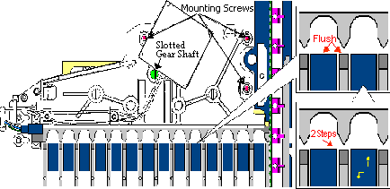
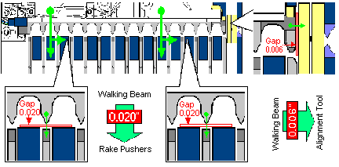
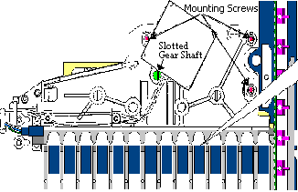
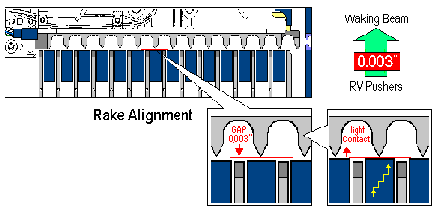
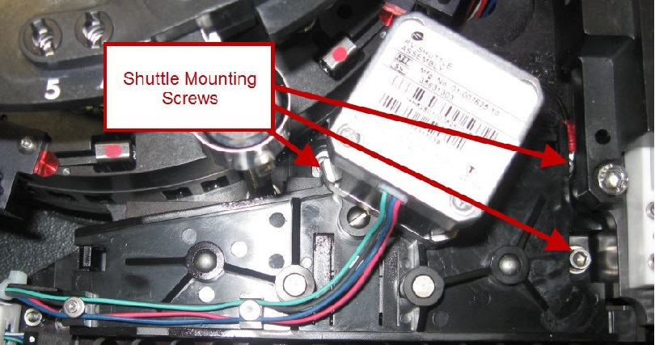
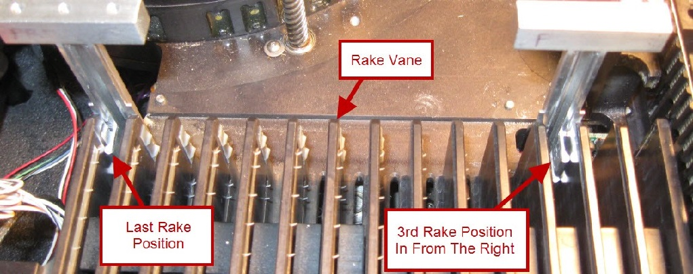
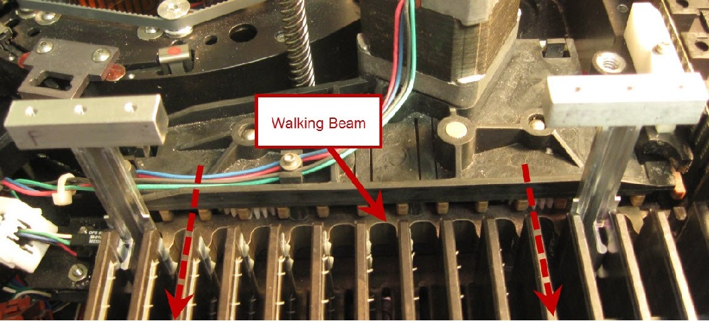

Aligning RV Shuttle and Rake
The procedure describes how to align the RV shuttle and rake.
Pre-Requisites: Complete the adjustment of the RV shuttle home sensor before aligning the RV shuttle and rake.
Note: Refer to the
Adjusting RV Shuttle Home Sensor procedure.
Required Tools:
- RV Left/Right Alignment tool
- 0.006-in feeler gauge
- 0.020-in feeler gauge
- 0.003-in feeler gauge
- T handled tool set
Align the RV shuttle and rake each time the RV shuttle or rake are removed or replaced, and occasionally as needed for troubleshooting shuttle or rake errors.
| For the following action... | Refer to... |
|---|---|
| Aligning using feeler gauges | Step 1 |
| Aligning using T handled tool set | Step 2 |
| Verify operation of RV Shuttle and Rake | Step 3 |
-
Prepare the instrument for alignment using feeler gauges.
- Remove all reaction vessels from the rake and the RV shuttle.
- Home the RV shuttle and the incubator belt.
- Home the rake, and then select [F3]. Move z to position (RV shuttle).
-
Using the up or down arrow keys, move the rake flush with the vanes and then advance the rake two steps beyond the front edge of the vanes.

- Align the RV shuttle.
-
Remove three to five vessel holders from the incubator belt around the shuttle transfer area.
Note: Vessel holders are removed easily when moved to one of the corner idler pulleys.
-
Place the RV alignment tool in the incubator track at the shuttle transfer location. Place the tool with the taller side to the right of the incubator belt and the thicker end down.

- Place a 0.006-in feeler gauge between the alignment tool and the shuttle.
-
Place a 0.020-in feeler gauge at each end of the shuttle, between the shuttle walking beam and the rake.
Note: Angle the gauges to maximize contact with the shuttle walking beam and the rake.
-
If the 0.006-in and 0.020-in gaps are incorrect, then align the RV shuttle.

- Loosen the three shuttle mounting screws.
- Slide the RV shuttle forward and right simultaneously, aligning it against the RV alignment tool, the feeler gauges, and the rake.
- Secure the RV shuttle in position by tightening the three mounting screws.
- Remove the rake alignment tool.
- Reinstall the RV clips on the incubator belt.
- Align the Rake.
- Home the incubator belt and the rake. Select RV Shuttle as the position and then Move Z to Position (F3). This will move the rake in front of the RV shuttle.
- Select Disable the Motors (F8)
-
Using a standard screw driver to rotate the RV shuttle center drive shaft counter-clockwise, center the RV shuttle walking beam fingers on the rake.

- Select Enable the Motors (F8) after the walking beam fingers are centered.
- Place a 0.003-in feeler gauge between the RV shuttle and the rake. Angle the feeler gauge to maximize contact with the shuttle walking beam and the rake.
- Use the up arrow key to advance the rake, one step at a time, until there is light contact between the rake and the feeler gauge along the entire length of the rake (light contact = feeler gauge is held in place lightly, not loose or unmovable).
- Save the Offset Value (F7).
-
Prepare the Instrument for alignment using T handled tool set.
- Remove all the reaction vessels from the rake and the RV shuttle.
- Select Diagnostics (F7) > Device Diagnostics (F4) > Mechanics (F1) and Home the Incubator Belt and Shuttle
- Home the Rake
- Align the RV shuttle
-
Loosen the 3 shuttle mounting screws and slide the shuttle back from the rake vanes

-
Insert the T handled tools until they bottom out in the following positions (pictured below)
- The 3rd rake vane position in from the right
- The last rake vane position on the far left

- Position the Shuttle.
-
Slide the walking beam firmly into the alignment tools (pictured below)
Note: The walking beam fingers should align with the rake vanes.

- Secure the 3 shuttle mounting screws.
- Remove the alignment tools.
- Align the rake.
- Home the incubator belt and the rake. Select RV Shuttle as the position and then Move Z to Position (F3). This will move the rake in front of the RV shuttle.
- Select Disable the Motors (F8)
-
Using a standard screw driver to rotate the RV shuttle center drive shaft counter-clockwise, center the RV shuttle walking beam fingers on the rake.
- Select Enable the Motors (F8) after the walking beam fingers are centered.
- Use the up arrow key to advance the rake, one step at a time, until there is light contact between the rake and the shuttle walking beam fingers.
- Save the Offset Value (F7).
-
Verify the RV shuttle and Rake operation.
Note: If poor RV transfers persist after multiple alignment attempts, troubleshoot the incubator belt and pulleys or the shuttle.
- Initialize the system (if necessary).
- Home the Rake then Move Z to Position (F3)
- Home the RV Shuttle several times to verify the shuttle is not striking the Rake. Repeat alignment steps if contact occurs.
- From the Supplies screen, add reaction vessels.
-
Adjust the RV sensor voltages.
Note: Refer to the Adjusting RV Sensors procedure.
-
Align the pipettor to RV position 1.
Note: Refer to the Alignment: Pipettor to RV procedure
-
Run the Incubator Track Vessel Holder exerciser.
- From the Main Menu, select Diagnostics (F7) > Device Diagnostics (F4) > Exerciser (F6).
- Select Vessel Holders > Start.
- Observe each RV transfer from the shuttle into the incubator and from the incubator into the shuttle.
- Mark the vessel holders that an RV moves during the shuttle to incubator or incubator to shuttle transfers.
-
Troubleshoot as required:
- If no vessel holders move because of an RV transfer, then shuttle-to-incubator RV transfer function has been verified.
- If some of the vessel holders move because of an RV transfer, then replace the affected vessel holders.
- If most of the vessel holders move because of an RV transfer, then check the belt tension and the shuttle and incubator alignment.
Note: Refer to the Aligning Incubator Belt procedure.
- If shuttle or incubator errors occur, check for these possible causes:
- The shuttle might require aligning.
- The incubator belt might require calibrating, tensioning, or aligning.
- The incubator belt or pulleys might be defective.
- If any vessel holders were replaced, then calibrate the incubator belt and repeat the exerciser routine.
Note: Refer to the Calibrating Incubator Belt procedure.
- Reinstall the incubator track light shield and the transparent incubator cover, if they were removed.